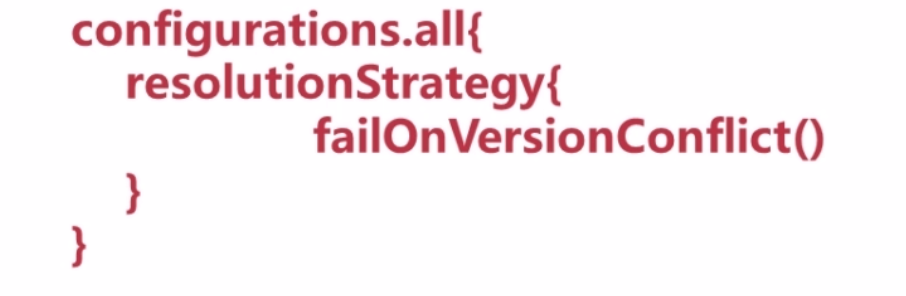
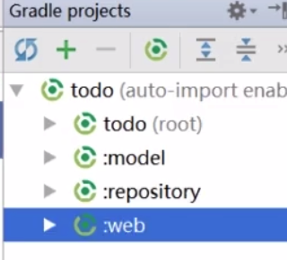
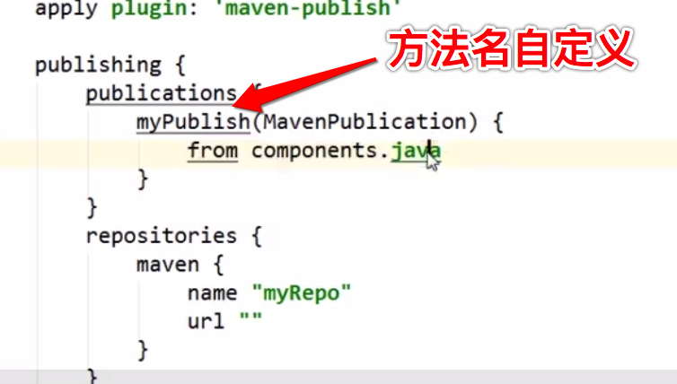

新一代构建工具Gradle
项目自动化介绍
构建工具的作用
- 依赖管理
- 测试，打包，发布
- 机器能干的活，绝不让人去干
主流构建工具
Ant—>编译，测试，打包
Maven–>编译，测试，打包，依赖管理，发布
Gradle—>编译，测试，打包，依赖管理，发布,使用Groovy脚本而不再使用xml
Gradle是什么？
是一个开源的项目自动化构建工具，建立在Apache Ant和Maven概念的基础上，并引入了基于Groovy的特定领域语言(DSL),而不再使用XML语法管理构建脚本，能提供更高的灵活性和可扩展性
准备使用Gradle
安装
- 确保已经安装JDK
- https://gradle.org/ ,https://gradle.org/releases/ 下载
- 配置环境变量
GRADLE_HOMEpath%GRADLE_HOME%\bin; - 验证
gradle -v
groovy基础知识
理论介绍
Groovy是什么？
Groovy是用于Java虚拟机的一种敏捷的动态语言，它是一种成熟的面向对象编程语言，既可以用于面向对象编程，又可以用作纯粹的脚本语言。使用该种语言不必编写过多的代码，同时又具有闭包和动态语言中的其他特性
与Java相比
- Groovy完全兼容Java的语法
- 分号是可选的
- 类，方法默认是public
- 编译器给属性自动添加getter/setter方法
- 属性可以直接用点号获取(所有属性都是公共的)
- 最后一个表达式的值会被作为返回值(return这个词可以不写)
- ==等同于equals(),不会有NullPointerExceptions
package groovy.reflect.field
class Employee {
String id
String name
def getAge() {
'everyone is 24'
}
static main(args){
def empl1 = new Employee(id:'00001',name:'Tom')
println empl1.name
//可以看到，我们并没有给“Employee”类定义“age”属性，但是我们实现了“getAge”方法，我们就可以通过Gpath来访问“age”属性
println empl1.age
}
}
如“empl1.name”并不是直接访问“empl1”对象的“name”属性，而是通过“Employee”类隐含实现了的“get”和“set”方法来访问的
我们并没有给“Employee”类定义“age”属性，但是我们实现了“getAge”方法，我们就可以通过Gpath来访问“age”属性 ,当然如果我们声明了属性的话会自动生成getter和setter
高效的特性
- assert语句
- 可选类型定义(类型可选，可以自己推导出来)
- 括号可选，调用时参数括号可以不写
- 字符串 单引号 双引号 三个单引号
- 集合API
- 闭包
Tool->Groovy Console可弹出Groovy的编程环境控制台进行Groovy代码的编写和运行
可选的类型定义
def version=1
断言
assert version==2
括号是可选的
println version 等同于 println(version)
字符串
//字符串 有三种表达形式
def s1='rico'//第一种:仅仅是个字符串
def s2="gradle version is ${version}"//第二种:可以插入变量
def s3='''my name
is rico'''//第三种:可以换行
println s1
println s2
println s3
如果双引号字符串中没有插入表达式的话对应的是java中的String对象，如果有则对应Groovy中的GString对象。
单引号字符串如果只有一个字符会被转化成char类型。
Groovy中使用${}来表示插入表达式，$来表示引用表达：
def name = 'Guillaume' // a plain string
def greeting = "Hello ${name}"
assert greeting.toString() == 'Hello Guillaume'
def person = [name: 'Guillaume', age: 36]
assert "$person.name is $person.age years old" == 'Guillaume is 36 years old'
shouldFail(MissingPropertyException) {
println "$number.toString()"
}
集合API
集合有list和map
List
默认对应的java的list是ArrayList
//集合api
//list
def buildTools=['ant','maven'];//默认对应的java的list是ArrayList
buildTools << 'gradle' //追加一个
assert buildTools.getClass()==ArrayList //验证是否是ArrayList
assert buildTools.size()==3
以上assert结果都是true
Groovy中列表使用[]表示，其中可以包含任意类型的元素：
map
map对应到Java中是LinkedHashMap
//map
def buildYears=['ant':2000,'maven':2004];
buildYears.gradle=2009
println buildYears.ant
println buildYears['gradle']
println buildYears.getClass()
闭包
下面看一些闭包的具体例子：
{ item++ }
{ -> item++ }
{ println it }
{ it -> println it }
{ name -> println name }
{ String x, int y ->
println "hey ${x} the value is ${y}"
}
{ reader ->
def line = reader.readLine()
line.trim()
}
闭包简单来说就是一段代码块 ，和方法一样，可以有参数，可以没参数
闭包可以被赋值给一个变量，也可以当做一个参数传入给一个方法，像普通方法一样调用
//闭包
//包含参数
def c1={
v ->//包含一个参数,类型可省
println v
}
//不包含参数
def c2={
println 'hello'
}
def method1(Closure closure){//定义一个调用有参闭包的方法
closure('param')
}
def method2(Closure closure){
closure()
}
method1(c1)
method2(c2)
输出
param
hello
闭包有两种调用方式：
def code = { 123 }
assert code() == 123
assert code.call() == 123
闭包名+（）或者闭包名.call()来调用闭包。
当闭包没有显式声明参数时，其默认包含一个隐式的参数it。
def greeting = { "Hello, $it!" }
assert greeting('Patrick') == 'Hello, Patrick!'
闭包也是对象
闭包在groovy中是groovy.lang.Closure类的实例，这使得闭包可以赋值给变量或字段。
def listener = { e -> println "Clicked on $e.source" }
assert listener instanceof Closure
Closure callback = { println 'Done!' }
Closure<Boolean> isTextFile = {
File it -> it.name.endsWith('.txt')
}
使用gradle语法解析构建脚本
使用Groovy的语法来解析这段gradle构建脚本
构建脚本中默认都有个Project实例
构建脚本中所有的代码作用域都是Project
第一句：
apply plugin:'java'
project实例中有个方法叫做apply,然后它的参数类型是Map,我们这里值是plugin:'java' 意思是key为plugin的值是java ,这里还省略了括号
跟进源代码就可以看到apply方法
第二句：
version='0.1' 是Project实例中有个属性叫version ,它的值是0.1
第三句:
repositories {
mavenCentral()
}
repositories也是一个方法 ,其中{ mavenCentral() } 作为一个闭包当做参数传入(闭包的运行结果当做参数) ,来调用repositories这个方法
第四句
dependencies {
classpath 'com.android.tools.build:gradle:2.1.2'
}
dependencies也是一个方法，后面大括号也是一个闭包 ，闭包的运行结果作为参数去调用dependencies这个方法 ，其中,classpath又是一个方法，当然dependencies中还有诸如:implementation,runtimeOnly,testImplementation等方法
compile：编译时必须。
runtime：运行时必须，包括编译时。
testCompile：测试编译时必须。
testRuntime：测试运行时必须，包括编译时。
有点类似于下面的结构
def dependencies(Closure cl){
cl.call();
}
def classpath(String path){
println path
}
dependencies {
classpath 'com.android.tools.build:gradle:2.1.2'
}
那么我们再来看这个：
task clean(type: Delete) {
delete rootProject.buildDir
}
这个用上面的思路套进去看看呢？task是一个方法，没毛病。后面是两个参数？clean和一个闭包？这里就不对了，如果是两个参数，中间需要有,隔开，所以这里只有一个参数，就是clean。那这就是什么写法？这里我们又要了解groovy中的一个语法特性，
当一个方法的最后一个参数是闭包，可以将这个闭包写在
()外面。
看例子：
def foo(String s,Closure cl){
cl(s)
}
//❶
foo('hello world'){
println it
}
foo 'hello world',{
println it
}
方法的两种特殊写法都在这了，上面讲个写法就是❶处的写法。
所以把clean理解为一个参数是对的，接着再看clean(type: Delete)这个就简单了，groovy中的方法参数是支持命名参数的，这里用的就是命名参数，到这里都理顺了，我们还是写一个小例子模仿一下上面的写法：
def task(String taskName){
println 'execute task ' + taskName
}
def clean(Map type,Closure cl){
type.type
}
def delete(String path){
}
Delete = 'delete'
task clean(type:Delete){
delete "path"
}
有空可以看下org.gradle.api.Project这个interface的源码 ,会对各项属性和方法有了解
项目name保存在settings.gradle中,settings.gradle是用来管理多项目构建的

第一个gradle项目
构建脚本 build.gradle
plugins {
id 'java'
}
group 'org.rico.gradle' //gav
version '1.0-SNAPSHOT' //版本
sourceCompatibility = 1.8 //源文件适应的版本
repositories {//仓库
mavenCentral()
}
dependencies {//依赖管理
testCompile group: 'junit', name: 'junit', version: '4.12'
}
新的插件DSL提供一种简洁而方便的定义插件依赖的方法
其中上面的
plugins {
id 'java'
}
表示使用Java核心插件
使用核心插件可以使用简称,如果从插件官网使用社区版插件，就需要使用全称了,例如
plugins {
id 'com.jfrog.bintray' version '0.4.1'
}
而老版本2.0及以下的gradle是
apply plugin: "java"
Gradle构建项目的的目录结构和Maven是一样的，兼容Maven
如果直接用gradle创建项目的话这些目录都是没有的，需要我们手动创建，后面我们会学到使用task来自动帮我们创建这些目录
打包成jar
它的功能就是把源文件编译完成后打包成jar包 ，build也可以实现同样的功能，因为build就是运行的build.gradle这个构建脚本 ，我们这里使用了java这个插件，所以build完成之后也是jar包
classes就是把源文件编译成class文件
clean就是清除以前的构建(build目录)
我们双击jar，然后编译窗口出现以下内容
task任务包括了编译java，处理资源文件，生成字节码,打包成jar包
任务完成后jar包放在build/libs文件夹下
web应用 war包
添加war这个插件
gradle有很多插件，关于gradle有哪些插件可以去官网看
我们也可以编写自己的插件
高级应用
构建脚本介绍
构建块：
Gradle构建中的两个基本概念是项目(Project)和任务(task)，每个构建至少包含一个项目，项目中包含一个或多个任务。在多项目构建中，一个项目可以依赖于其他项目；类似的，任务可以形成一个依赖关系图来确保他们的执行顺序
上图中，项目一依赖于项目二，A依赖于B和C，显然，B和C得在A之前执行完。
项目二中F依赖E，E依赖D，所以顺序是DEF
项目
一个项目代表一个正在构建的组件，比如一个Jar文件，当构建启动后，Gradle会基于build.gradle实例化一个org.gradle.api.Project类，并且能够通过project使其隐式可用
项目Project最主要的几个属性和方法
属性：
group ，name ，version 根据这三个属性可以唯一确定组件，name和Maven中的artifactid是一样的
所以group 'org.rico.gradle'等同于project.group='org.rico.gradle'
方法：
apply,dependencies,repositories,task
apply就是应用一个插件，是project上面的一个方法
dependencies声明这个项目依赖那些jar包和项目的
repositories是指定仓库，去哪个仓库去找依赖的jar包
task声明项目中有哪些任务
属性的其他配置方式:
ext，project上有个ext属性，我们可以在这上面定义属性
还可以在gradle.properties中用键值对的方式来声明属性
任务(task)
任务对应org.gradle.api.Task. 主要包括任务动作和任务依赖。 任务动作定义了一个最小的工作单元。可以定义依赖于其他任务，动作序列和执行条件
任务中的一些方法；
- dependsOn 用于声明任务依赖的
- doFirst,doLast (<<) 两个小于号和doLast是一样的，是doLast的简写方式 。 task是一个任务列表，doFirst就是在任务列表的最前边添加一个动作，doLast就是在任务列表的最后面添加一个动作。一个任务里面可以执行多次doFirst和doLast ,也就是说动作列表里面可以包含多个动作
settings.gradle是用来管理多项目构建的
我们可以自定义任务，但是我们使用插件后，这些插件自带了很多任务
任务流程是：编译java，处理资源文件，编译字节码文件，打jar包，说明jar这个任务是依赖上面三个任务的 ，上面的up-to-date表示自上次构建后没有更改，是最新的 ，所以是跳过执行的
自定义任务
我们写一个自动创建java目录的task
def createDir = {
path ->
File dir=new File(path)
if(!dir.exists()){
dir.mkdirs()
}
}
task makeJavaDir(){
def paths=['src/main/java','src/main/resources','src/test/java','src/test/resources']
doFirst{
paths.forEach(createDir)
}
}
task makeWebDir() {
dependsOn 'makeJavaDir'//webapp只是在java的目录上多了webapp，所以依赖javadir的任务
def paths=['src/main/webapp','src/test/webapp']
doLast {
paths.forEach(createDir)
}
}
自己写的task在other里
双击执行
构建的生命周期
除了动作代码之外都是配置代码
执行代码就是动作代码
配置阶段决定任务的依赖关系和执行顺序
一个方法中可能有配置代码也有执行代码，先执行完文件中的所有配置代码，再会执行动作代码. 如果在执行阶段修改任务的依赖会报错
例如我改成下面的代码
task makeWebDir() {
def paths=['src/main/webapp','src/test/webapp']
doLast {
dependsOn 'makeJavaDir'//webapp只是在java的目录上多了webapp，所以依赖javadir的任务
paths.forEach(createDir)
}
}
钩子方法

这些基本不会用到
依赖管理
工件坐标
工件就是jar包
通过group,name,version可以唯一确定一个jar包
常用仓库
- mavenLocal(本机存储的仓库，down下来的jar包都存放在这里)
- mavenCentral
- jcenter
- 自定义仓库
- 文件仓库(基本不用)
依赖的传递性
B依赖A，如果C依赖B，那么C依赖A
n
依赖阶段配置
compile 编译阶段
runtime 运行时阶段
测试代码也有2个阶段
testCompile, testRuntime
依赖阶段关系
运行时阶段都是扩展于编译时阶段的，也就是说编译阶段依赖的jar包在运行时一定会依赖 ，运行时依赖的在编译时不一定依赖
比如jdbc的驱动，在写代码时JDK包含了JDBC的接口，所以编译时不需要，运行时需要
源代码依赖的测试代码一定会依赖，测试代码依赖的源代码不一定依赖
dependencies {
testCompile group: 'junit', name: 'junit', version: '4.11' //测试时依赖
}
比如
dependencies {
compile group: 'ch.qos.logback', name: 'logback-classic', version: '1.2.3'
testCompile group: 'junit', name: 'junit', version: '4.11'
}
也有个简单写法
ch.qos.logback:logback-classic:1.2.3
第一个冒号之前的是groupid，第二个冒号之前的是name，最后一个冒号后面的是version
gradle中可以配多个仓库
j
repositories {
mavenLocal()
mavenCentral()
}
私服的写法
repositories {
maven{
url 'xxx.xxx.com' //或url='xxx.xxx.com'
}
}
解决版本冲突
先来看一个版本冲突的例子
由于传递性依赖，对slf4j出现了2个版本的依赖
解决冲突：
- 查看依赖报告
- 排除传递性依赖
- 强制一个版本
gradle对版本冲突默认的解决方案是依赖最高版本
如何修改默认解决策略？

图中的意思是如果发现版本冲突，让它构建失败，否则我们很难发现出现了版本冲突
如何解决呢？
2种方式
1 排除依赖 2 指定依赖版本
我们可以排除一个具体的jar包的依赖，也可以通过transitive排除所有传递性依赖(但是这种情况用的很少)
图中module就是name属性，版本是不需要指定的
第二种方式就是强制指定一个版本
task/help中有个dependencies的task，可以显示所有依赖的结构
我们发现hibernate中的slf4j由1.5.8变成了1.7.22
多项目构建
项目模块化
企业项目中，包层次和类关系比较复杂，把代码拆分成模块通常是最佳实践，这需要你清晰的划分功能的边界。 项目符合高内聚，低耦合时，模块化就变得很容易，这是一条非常好的软件开发实践
配置要求：
所有项目应用java插件
web子项目打包成war
统一配置公共属性
所哟项目添加logback日志
所有项目就是根项目加上子项目
对子项目的依赖有个特殊的写法
dependencies{
compile project (":model") //model是模块名
}
idea新建module时应该new->module
当我们新建module时，settings.gradle会有模块include进来
settings.gradle就是用来进行多项目构建的的 ，它就这一个功能

todo旁边显示root，表示它是根项目
下面的model,repository,web左边都有冒号，说明他们是子模块
repository依赖model，web依赖model和repository，但是由于依赖传递，web只需要依赖repository即可
dependencies {
compile project (":repository")
}
多项目构建实战
我们在创建module的时候，每个module的build.gradle都有java插件，源代码版本等属性设置 ，比较麻烦
我们直接改成在根项目上配置，使用allprojects这个方法
allprojects{
apply plugin 'java'
sourceCompatibility=1.8
}
这样就对所有项目应用这些配置了 你在build.gradle中能写什么，在allprojects中就能写什么
然后只在web模块中使用war这个插件
然后比如说所有子项目都要用某个依赖，可以在根项目的build.gralde文件的allprojects中配置依赖，也可以在根项目的build.gralde文件的subprojects中配置依赖，由于我们根项目没代码，所以效果一样
gradle.properties配置公共属性
如果想对根项目进行任务，就执行根项目的task，如果只想执行子项目的任务，就执行子项目的task，gradle会根据依赖进行相应顺序执行
自动化测试


如果测试失败了，后面的build就不会执行了
发布
发布是通过一个插件来完成的
官方提供了一个maven-publish插件
插件下配置2个属性，一个是publications一个是repositories

c配置
配置了发布，右侧gradle会出现一些publishing 的任务

总结
一个疑问
build.gradle中有设置属性的一段
group 'org.rico.gradle'
version '1.0-SNAPSHOT'
但是使用空格加参数这不是调用方法的代码吗？怎么变成设置属性了呢？ 设置属性应该是=号 啊
而且我按住Ctrl点进去发现调用的的确是setGroup和setVersion，也就是的确是调用的方法
而且我们自己写一个属性，然后采用 空格这种方式赋值是错误的，必须加等号
疑惑，有知道的小伙伴欢迎告知
扩展阅读
委托策略
委托策略是groovy中闭包独有的语法，这也使得闭包较java的lambda更为高级。下面简单介绍一下groovy中的委托策略。
Owner，delegate和this
在理解delegate之前，首先先要了解一下闭包中this和owner的含义，闭包中三者是这么定义的：
this表示定义闭包的外围类。owner表示定义闭包的直接外围对象，可以是类或者闭包。delegate表示一个用于处理方法调用和属性处理的第三方类。
This
闭包中，使用this关键字或者调用方法getThisObject()来获得其外围类：
class Enclosing {
void run() {
def whatIsThisObject = { getThisObject() }
assert whatIsThisObject() == this
def whatIsThis = { this }
assert whatIsThis() == this
}
}
class EnclosedInInnerClass {
class Inner {
Closure cl = { this }
}
void run() {
def inner = new Inner()
assert inner.cl() == inner
}
}
class NestedClosures {
void run() {
def nestedClosures = {
def cl = { this }
cl()
}
assert nestedClosures() == this
}
}
判断this表示的具体是哪个对象可以从this往外找，遇到的第一类就是this代表的类。
Owner
owner与this类似，只不过owner表示的是直接外围对象，可以是类也可以是闭包：
class Enclosing {
void run() {
def whatIsOwnerMethod = { getOwner() }
assert whatIsOwnerMethod() == this
def whatIsOwner = { owner }
assert whatIsOwner() == this
}
}
class EnclosedInInnerClass {
class Inner {
Closure cl = { owner }
}
void run() {
def inner = new Inner()
assert inner.cl() == inner
}
}
class NestedClosures {
void run() {
def nestedClosures = {
def cl = { owner }
cl()
}
assert nestedClosures() == nestedClosures
}
}
上述例子与this中的例子不同的就是NestedClosures，其中owner表示的是nestedClosures而不是NestedClosures。
Delegate
闭包中可以使用delegate关键字或者getDelegate()方法来得到delegate变量，它默认与owner一致，但可以由用户自定义其代表的对象。
class Enclosing {
void run() {
def cl = { getDelegate() }
def cl2 = { delegate }
assert cl() == cl2()
assert cl() == this
def enclosed = {
{ -> delegate }.call()
}
assert enclosed() == enclosed
}
}
闭包中的delegate可被指向任意对象，我们看下面这个例子：
class Person {
String name
}
class Thing {
String name
}
def p = new Person(name: 'Norman')
def t = new Thing(name: 'Teapot')
定义了两个拥有相同属性name的类Person和Thing。接着定义一个闭包，其作用是通过delegate来获得name属性。
def upperCasedName = { delegate.name.toUpperCase() }
接着改变闭包的delegate的指向，我们可以看到闭包调用结果也不同：
upperCasedName.delegate = p
assert upperCasedName() == 'NORMAN'
upperCasedName.delegate = t
assert upperCasedName() == 'TEAPOT'
Delegate策略
在闭包中，当一个属性没有指明其所有者的时候，delegate策略就会发挥作用了。
class Person {
String name
}
def p = new Person(name:'Igor')
def cl = { name.toUpperCase() } //❶
cl.delegate = p //❷
assert cl() == 'IGOR' //❸
可以看到❶处的name没有指明其所有者。即这个name属性压根不知道是谁的。在❷处指明cl的delegate为p，这时候在❸处调用成功。
以上代码之所以可以正常运行是因为name属性会被delegate处理。这是一个十分强大的方式用于解决闭包内的属性的访问或方法的调用。在❶处没有显示的使用delegate.name是因为delegate策略已经在程序运行的时候帮助我们这样做了。下面我们看看闭包拥有的不同的delegate策略：
Closure.OWNER_FIRST这是默认的策略，优先从owner中寻找属性或方法，找不到再从delegete中寻找。上面的例子就是因为在owner中没有找到name，接着在delegate中找到了name属性。Closure.DELEGATE_FIRST与OWNER_FIRST相反。Closure.OWNER_ONLY只在owner中寻找。Closure.DELEGATE_ONLY只在delegate中寻找。Closure.TO_SELF在闭包自身中寻找。
下面我们看一下默认的Closure.OWNER_FIRST的用法：
class Person {
String name
def pretty = { "My name is $name" }
String toString() {
pretty()
}
}
class Thing {
String name
}
def p = new Person(name: 'Sarah')
def t = new Thing(name: 'Teapot')
assert p.toString() == 'My name is Sarah'
p.pretty.delegate = t //❶
assert p.toString() == 'My name is Sarah' //❷
尽管在❶处将delegate指向了t，但因为是owner first的缘故，还是会优先使用Person的name属性。
略做修改：
p.pretty.resolveStrategy = Closure.DELEGATE_FIRST
assert p.toString() == 'My name is Teapot'
这时候就会访问t的name属性了。
下面再来看一个例子：
class Person {
String name
int age
def fetchAge = { age }
}
class Thing {
String name
}
def p = new Person(name:'Jessica', age:42)
def t = new Thing(name:'Printer')
def cl = p.fetchAge
cl.delegate = p
assert cl() == 42
cl.delegate = t
assert cl() == 42
cl.resolveStrategy = Closure.DELEGATE_ONLY
cl.delegate = p
assert cl() == 42
cl.delegate = t
try {
cl()
assert false
} catch (MissingPropertyException ex) {
// "age" is not defined on the delegate
}
当使用了Closure.DELEGATE_ONLY后，若delegate中找不到age属性，则会直接报错。
GStrings中的闭包
先来看一下下面这段代码：
def x = 1
def gs = "x = ${x}"
assert gs == 'x = 1'
OK,运行没有问题，那如果加两行代码呢？
x = 2
assert gs == 'x = 2'
这里就会报错了，错误原因有两：
- GString只是调用了字符串的toString方法来获得值。
${x}这种写法并不是一个闭包，而是一个表达式等价于$x,当GString被创建的时候该表达式会被计算。
所以当给x赋值2的时候，gs已经被创建，表达式也已经被计算，结果是x = 1,所以gs得值就是固定的x = 1。
如果要在GString使用闭包也是可以的，如下：
def x = 1
def gs = "x = ${-> x}"
assert gs == 'x = 1'
x = 2
assert gs == 'x = 2'
This blog is under a CC BY-NC-SA 3.0 Unported License
本文链接：http://hogwartsrico.github.io/2019/03/24/learn-gradle/